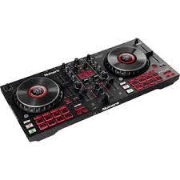
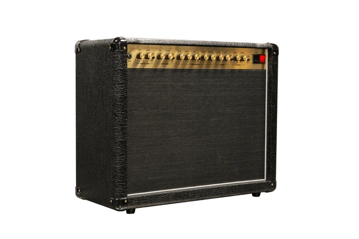
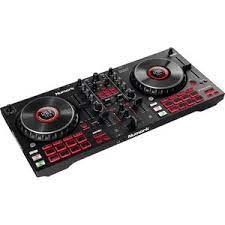
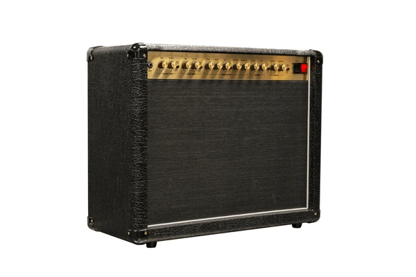

"Benvenuti nel cuore pulsante della tua passione musicale! Da noi, presso DrumItaly, l'universo della musica prende vita. Siamo più di un semplice negozio; siamo un santuario per gli amanti della musica, dove le note diventano esperienze e gli strumenti sono la chiave per sbloccare la tua creatività.
Esplora il nostro vasto assortimento di strumenti musicali di alta qualità, dalle chitarre ai pianoforti, dalle batterie ai sintetizzatori. Ogni articolo è curato con attenzione per garantire prestazioni ottimali e un suono eccezionale.
Ma non ci fermiamo agli strumenti. Abbiamo tutto ciò di cui hai bisogno per completare il tuo setup musicale, dalle corde ai pick, dagli amplificatori alle custodie. Inoltre, il nostro team esperto è qui per guidarti nella scelta dell'attrezzatura perfetta per le tue esigenze e budget.
Con spedizioni veloci e un servizio clienti attento, fare acquisti su DrumItaly è facile e conveniente. Unisciti alla nostra comunità di musicisti appassionati e scopri un mondo di possibilità musicali con noi!"
 


